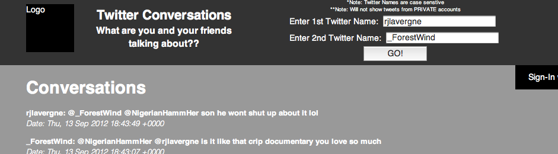

Adventureglades.com
Scrolling interactive brochure for Everglades National Park in Florida.
Twitlations
Concept site / twitter app that shows conversations (mentions) between two public twitter profiles for the past 5 days.
Mangahit.com (Mobile Concept)
Mobile concept site for Mangahit.com, using jQuery Mobile
Welcome to my potential portfolio site/current panel site.
A kid growing up in Southeast Texas, I was always into technology. I've played console video games since I was about 4 years of age, and PC games since about 7. My brother and I even installed the first family PC on our own when I was 6! I've always had an interest in websites and the internet, but my real dream as a kid was to make video games. After taking computer science in HS, that quickly changed, and the dream became Advertising.
I was set on the fact that I would make some of the best Ads for video games in the world as I entered my freshman year at Morehouse College. My mind was set on succeeding there as a Marketing major and jumping right into creating ads. However, I soon found out that Morehouse was not exactly the best place for someone who wanted to create ads. Just as I was 4 months away from Graduation I stumbled across a gem in Atlanta known as The Creative Circus. Going to school again after undergrad would be tough, but deep down I just knew it had to be worth it.
After a rough first week as a Graphic Designer, I took a chance and made the switch to the Web Development program. This was possibly one of the best decisions of my life. Not only did my financial situation call for a switch, but as it turns out I enjoy typing a lot more than drawing all day. I'm very happy with deciding to pursue a career as a web developer, and I'm not looking back. I plan to bring a certain swag to the industry that has never been seen before and make the internet a better place for everyone.